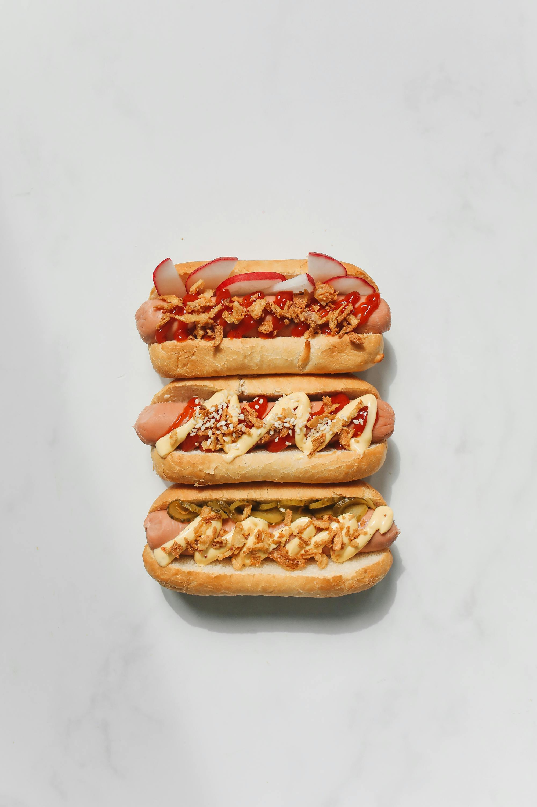

Who are we?
Welcome to The Wurst of Times, a restaurant that's as heavy on the puns as it is with the mustard!
We are a team of food enthusiasts, who believe that dining should be an experience filled with laughter and joy.
Our mission is to serve you the best hotdogs in town, presented with a sizzling side of humor and a dollop of fun.


Why we're best when we're at our wurst!
At The Wurst of Times, we use the finest, imported bratwurst sausages as well as our special recipe
creations, which change weekly!
Our chefs are dedicated to crafting the most delicious hotdogs, using only the freshest ingredients and the most creative toppings.
We believe that every bite should be a burst of flavor and every meal should be a celebration.